Speech and Language Processing question Answering
Task Introduction
Factoid questions, questions that can be answered with simple facts expressed in short texts, like the following:
（1）Where is the Louvre Museum located?
（2）What is the average age of the onset of autism?
Major paradigms for factoid question answering:
（1）Information-retrieval (IR) based QA, also called open domain QA
（2）Knowledge-based question answering
Two key technologies for question answering:
（1）Information retrieval (a key component of IR-based QA)
（2) Entity linking (a key component for knowledge-based QA)
Information Retrieval
Information retrieval or IR is the name of the field encompassing the retrieval of all manner of media based on user information needs.
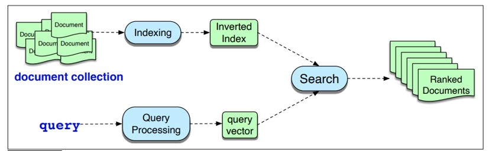
A user poses a query to a retrieval system, which then returns an ordered set of documents from some collection.
The basic IR architecture uses the vector space model, in which we map queries and document to vectors based on unigram word counts, and use the cosine similarity between the vectors to rank potential documents (Salton, 1971).
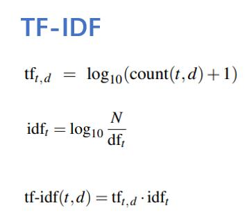
The term frequency tells us how frequent the word is; words that occur more often in a document are likely to be informative about the document’s contents.
The document frequency d_ft of a term t is the number of documents it occurs in.
N is the total number of documents in the collection, and d_ft is the number of documents in which term t occurs.
Document Scoring
We score document d by the cosine of its vector d with the query vector q:
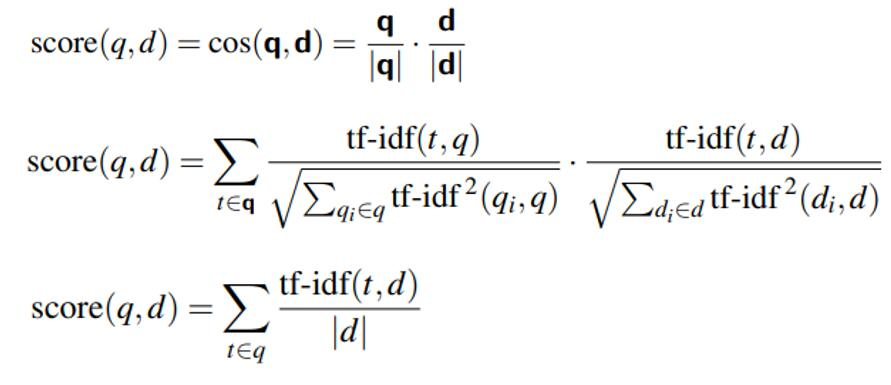
Queries are usually very short, so each query word is likely to have a count of 1.
And the cosine normalization for the query (the division by |q|) will be the same for all documents, so won’t change the ranking between any two documents $D_i and D_j$,
IR with Dense Vectors
TF-IDF algorithms for IR have a conceptual flaw:
(vocabulary mismatch problem)
They work only if there is exact overlap of words between the query and document.
Example: The user might decide to search for a tragic love story but Shakespeare writes instead about star-crossed lovers.
Solution to vocabulary mismatch problem : Handle synonymy.
Instead of (sparse) word-count vectors, using (dense) embeddings
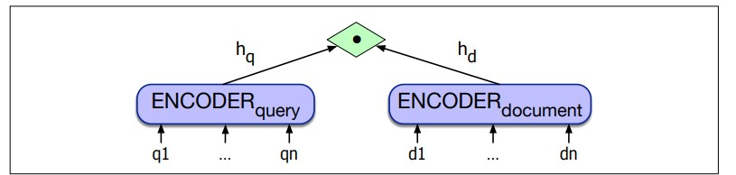
For example, if we used BERT, we would have two encoders BERTQ and BERTD and we could represent the query and document as the [CLS] token of the respective encoders (Karpukhin et al., 2020)
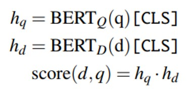
IR-based Factoid Question Answering
The goal of IR-based QA (sometimes called open domain QA) is to answer a user’s question by finding short text segments from the web or some other large collection of documents.
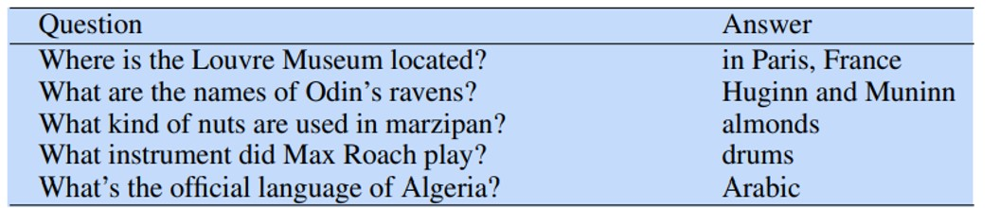
The dominant paradigm for IR-based QA is the retrieve and read model.
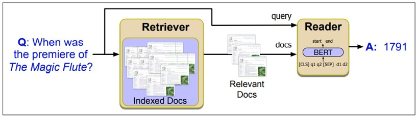
Reading comprehension systems are given a factoid question q and a passage p that could contain the answer, and return an answer a.
In the extractive QA we discuss here, the answer is a span of text in the passage.
If each span a starts at position as and ends at position ae, we make the simplifying assumption that this probability can be estimated as $P(a|q,p)=P_{start}(a_s|q,p)P_{end}(a_e|q,p)$
Reading comprehension
A standard baseline algorithm for reading comprehension is to pass the question and passage to any encoder like BERT , as strings separated with a [SEP] token, resulting in an encoding token embedding for every passage token $p_i$ .
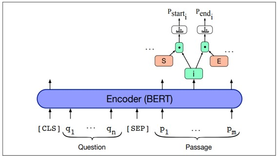
We’ll add two new special vectors:
span-start embedding S and span-end embedding E,
which will be learned in fine-tuning.
To get a span-start probability for each output token $p_i^{‘}$, we compute the dot product between S and $p_i^{‘}$
and then use a softmax to normalize over all tokens $p_i^{‘}$ in the passage:
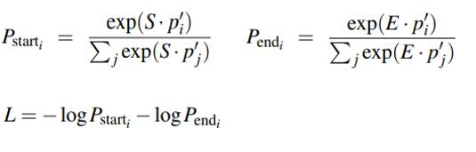
Entity Linking
Entity linking is the task of associating a mention in text with the representation of some real-world entity in an ontology (Ji and Grishman, 2011).
For example, given the sentence “Paris is the capital of France”, the idea is to determine that “Paris” refers to the city of Paris and not to Paris Hilton(human name) or any other entity that could be referred to as “Paris”.
Entity linking is done in (roughly) two stages: mention detection and mention disambiguation.
Mention Disambiguation is the task of linking mentions of ambiguous entities to their referent entities in a knowledge base such as Wikipedia.
Knowledge-based Question Answering
Knowledge-based question answering : answering a natural language question by mapping it to a query over a structured database.
Two common paradigms for knowledge-based QA:
(1) Graph based QA, models the knowledge base as a graph, often with entities as nodes and relations or propositions as edges between nodes.
(2) QA by semantic parsing, using the semantic parsing methods.
QA by Semantic Parsing
Using a semantic parser to map the question to a structured program to produce an answer.
Semantic Parsing task is to take pairs of training tuples and produce a system that maps from new questions to their logical forms.
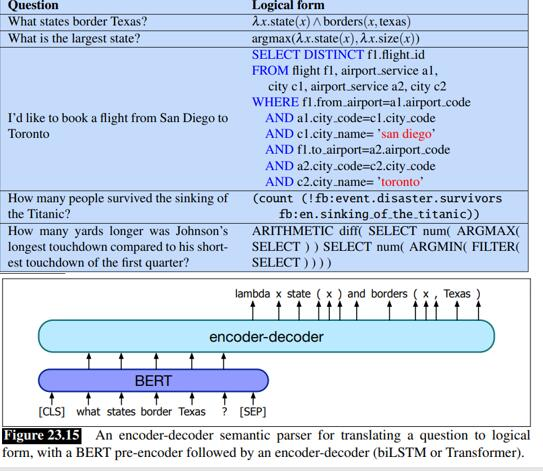
Using Language Models to do QA
An alternative approach to doing QA is to query a pretrained language model, forcing a model to answer a question solely from information stored in its parameters.
Fig. 23.16 shows the architecture; the deleted spans are marked by
Language modeling is not yet a complete solution for question answering;
For example in addition to not working quite as well, they suffer from poor interpretability (unlike standard QA systems, for example, they currently can’t give users more context by telling them what passage the answer came from)
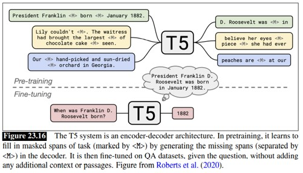
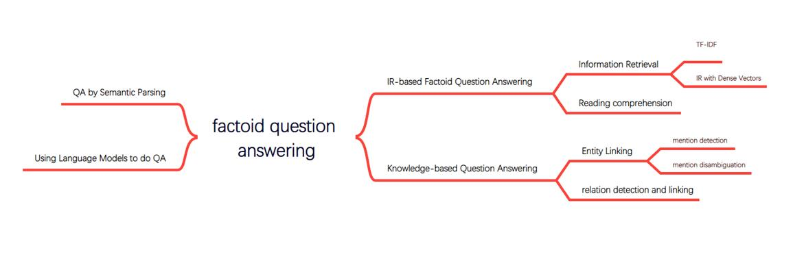
Case-Based Reasoning for Natural Language Queries论文阅读
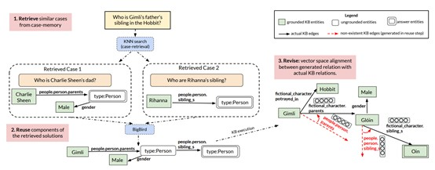
CBR模式：
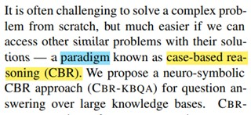
1、 Retrieve 信息检索任务。
计算q的嵌入，再通过点积计算q之间的相似度，以此获取k个case。
2、 Reuse
把q和k个case一块送入seq2seq模型，计算中间logical form。
这里直觉理解一下，BigBird的输出是一个logical form（观看模型图），其就是把多个case中的关系和query中的entity进行组合，产生符合标签要求的logical form。
这个就是通过transformer来实现的，注意力机制就是对各项进行加权组合，这里就是对q和case进行加权组合，从而实现（多个case中的关系和query中的entity进行组合，产生符合标签要求的logical form）。
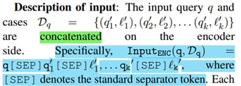
3、 Revise
通过transE对关系进行嵌入，从而计算中间logical form中的relation和KB中实际存在的relation之间的相似度，根据相似度转换成真实存在的relation。
各个模块中还包括很多细节：
Retrieve中如何使得案例检索 忽略entity的信息，而只根据relation来检索。（掩码）
Reuse模块中使用bigbird模型，一种稀疏注意力的transformer。
Reuse模块中，损失函数使用的正则化项（KL散度）
Revise模块中的transE，其本质是对relation进行嵌入。嵌入之后就可以做很多事，比如相似度计算。
Document-level Relation Extraction via Subgraph Reasoning论文阅读
总体介绍：
Document-level 关系提取：在一个文档中（源文本）提取实体之间的语义关系。
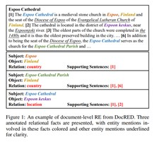
现行大多数方法先构造一个document-level的graph，然后关注全局图结构或者关注图中实体之间的路径。
本文提出了subgraph reasoning 架构（SGR），通过实体对间路径，整合产生一个子图结构，来进行关系推理。此外，启发式路径生成策略显式建模各种推理能力。
具体方法：
Task formulation：
关系提取，其实就是关系分类，给实体对进行分类 .
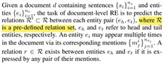
Document Encoding：
拿到纯文本，肯定要进行嵌入，才能进行运算。
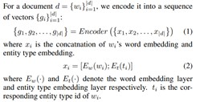
Subgraph Reasoning
Document Graph Construction：
本文采用了三种图节点：entity nodes、mention nodes、sentence nodes。（启发式路径生成的方法依赖于这种节点的巧妙设计）。
节点的嵌入方式（最大池化）：
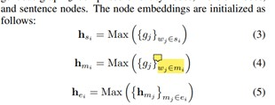
显式建模entity、mention、sentence之间的交互关系：
**Mention-Entity Edge:**建模共指关系（co-reference）
Mention-Sentence Edge：如果mention在某个句子中出现，则在对应的节点之间加入边。
**Sentence-Sentence Edge:**之前的方法有将所有句子节点都连接起来的，本文只把相邻的句子对应的节点相连，以此来保持序列化信息。
Reasoning Path Generation：启发式：通过这种路径生成方式来显式的建模各种推理能力，这种启发式的路径生成基于上述三种节点的设计。
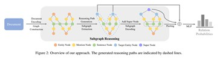
Intra-sentence Reasoning Path：两个entity同时出现在相同的句子中。
The relation between two entities co-occurred in the same sentence can be formulated as a path in the form of E-M-S-M-E. “E”, “M”, and “S” are entity node, mention node, and sentence node, respectively, “-” denotes edge.
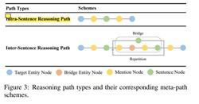
Inter-sentence Reasoning Path:（在同一个句子中，两个entity没有mention同时出现）
Logical Reasoning Path：通过一个bridge entity来间接建立关系。
It can be formulated as a path in the form of E-M-S-M-E-M-S-M-E, which models logical reasoning by performing reasoning over sentences containing the head, bridge, and tail entities, respectively.
Co-reference Reasoning Path：两个实体在相邻的句子中。
The relation between two entities in adjacent sentences is mostly established by a reference. It can be formulated as a path in the form of E-M-S-S-M-E, which models co-reference reasoning by performing reasoning over two adjacent sentences containing the head and tail entities respectively.
Subgraph Extraction：
之前的方法有独立使用各个推理路径来预测关系，最后聚合成最终结果。
本文中，利用各种路径来构造子图。
{不管是在本篇论文中，还是在KBQA by CBR over subGraph方法中，子图的构建在本质上，都是先构造检索出路径，然后基于路径中出现的entity来构造子图，具体就是把路径中所有出现的entity都连起来，就生成了子图。
只不过路径的生成方式不太同，在本文中是通过三种节点的巧妙设计方式，启发式生成了路径。
而在KBQA by CBR over subGraph方法中，路径是通过深度优先搜索来实现的，我猜是，从答案节点出发，深度检索query中出现的其他节点，检索过程就产生了一条条路径，多条路径合起来就是子图。}
Specifically, the subgraph G ′ is an induced subgraph of G, formed from the nodes that appear at least once on the paths and all of the edges in G among those nodes.
Subgraph Encoding:
采用L-layer stacked R-GCN [Schlichtkrull et al., 2018]对子图进行编码。
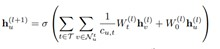
Classification：
We formulate the document-level RE task as a multi-label classification task.
把上述步骤中得到的各种全局信息（初始化的目标节点嵌入信息）、局部信息（图卷积输出）等信息拼接起来放到MLP中输出分类概率即可。
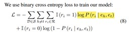